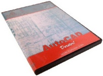

free2Design yazýlýmý ücretsizdir (yasal olarak lisanslýdýr). AutoCAD'e tam alternatiftir.
2008 dahil tüm AutoCAD dosyalarýný (DXF/DWG)
doðrudan açabilir, çalýþmalarýnýza devam eder,
dilerseniz tekrar AutoCAD dosyasý olarak kaydedebilirsiniz...
Kullanýcý izlenimleri için týklayýnfree2Design arayüzü video clip
 AutoCAD Dersler!
Günde 1 -2 saat ayýrarak
1-2 haftada AutoCAD Öðrenebilirsiniz.